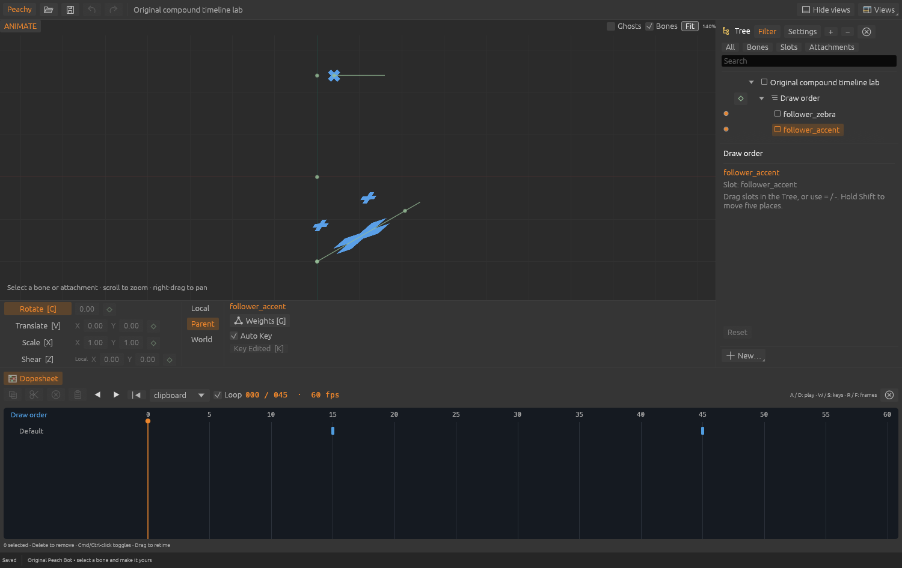
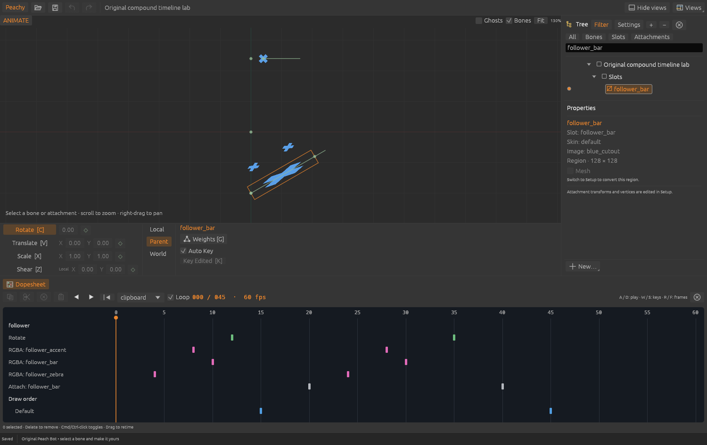
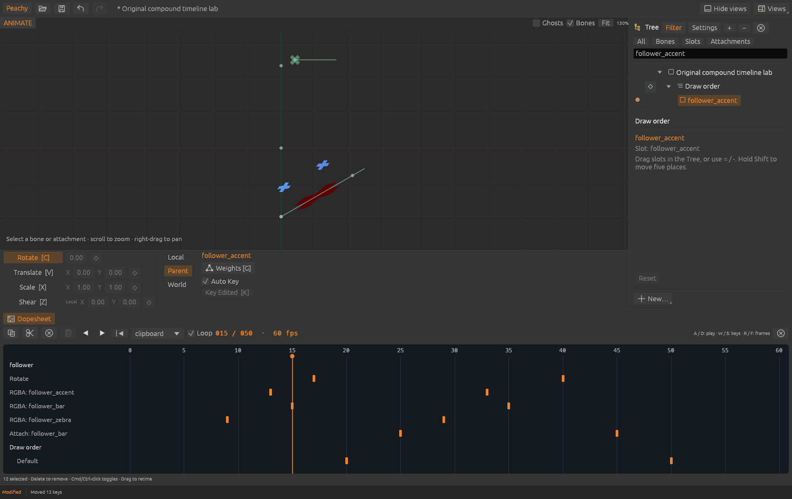
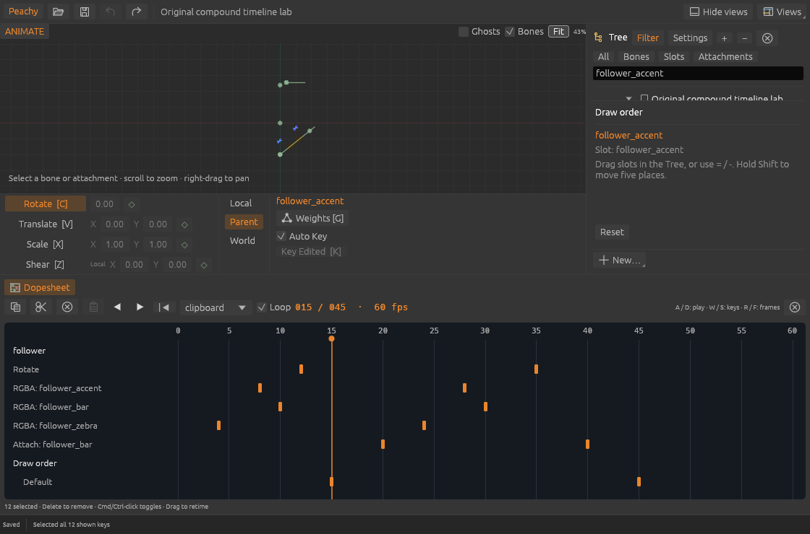
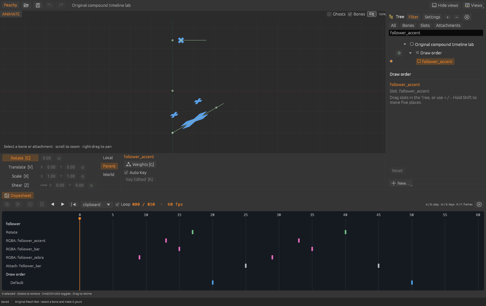

November 15, 2026 · native v23 · 64 commands /19 MCP tools. This bounded review uses one original blue-art fixture before and after compound timeline scope changes. The required native report passes. Exact build, state, history and closure claims are in the scalar record; full workflow and pixel parity remain open.
Open each original-size PNG for the same-fixture comparison. CSS scales the preview only; copied PNG bytes and dimensions are unchanged. Compound Graph display/editing, broader Deform-family scope, general Tree multi-selection, Shift ripple/cycle Offset and Lock/Sync remain open. No raster equivalence, complete Spine parity or new external-runtime result is claimed by this gallery.
Before: selected Slot shows only global order
Before capture · native state and same original fixture

The selected follower Slot previously showed only the global DrawOrder rows. The accepted before capture preserves the document; this is the same original blue-art fixture used in the after captures.
Open original 1500 × 946 PNG
Original capture hash
e51e479c1fff3e47a5a0da3170b27a7a190f68795e21d117fa9aefd02903a150After: show the parent Bone and sibling Slot tracks
Native input · compound row scope
A selected follower Slot exposes its parent Bone's keyed channels, the sibling RGBA family, the keyed attachment family and global Draw order. Presentation groups retain each key's typed owner.
Open original 1500 × 946 PNG
Original capture hash
421dfbccb892540eaf75c5a483d9a1fb8bb6124ceed37e9387016cba16b39689A true Region uses the same parent family
Native input · Region and parent context

Selecting the original Region exposes the measured parent Bone/Slot family. This scope check does not establish every Region pose tool, picking case or constraint-dependent context.
Open original 1500 × 946 PNG
Original capture hash
762244fbab63c6592eccb6fca3fc8c34c4a6177ee7b89ca205f4eb3477518b96Move selected keys across the compound rows
Native input · mixed typed-key movement

The accepted native movement capture shows keys in the compound scope. Exact selected identities, deltas and history comparisons belong to the linked scalar record; pixels alone do not establish them.
Open original 1500 × 946 PNG
Original capture hash
f38f97968bdad88903086b10e9a8bae6a639ef1c5b3741db8e3ccd109259f6a9Keep the compound scope reachable in the smaller window
Native input · minimum-window presentation

The original fixture is shown at the captured smaller window size. Use the full-size image to inspect row reachability and loaded art; this does not establish arbitrary layouts or pixel-identical styling.
Open original 1120 × 740 PNG
Original capture hash
fb0ff3b2f0c7a7e027ee28acb754e66b07ad6f03cbe9153e08dc49d4ad57aa2eSave and reopen the accepted native result
Native persistence · fresh empty history and clipboard

The reopened original project has one image, empty Undo/Redo and an empty clipboard. Complete typed-document comparisons are recorded separately in the scalar evidence; no general lossless interchange or native/MCP byte equality is inferred from the screenshot.
Open original 1500 × 946 PNG
Original capture hash
612063249df25287f92f7869fd198b90b52eddb2c910e4a2f8ff437c937a2132